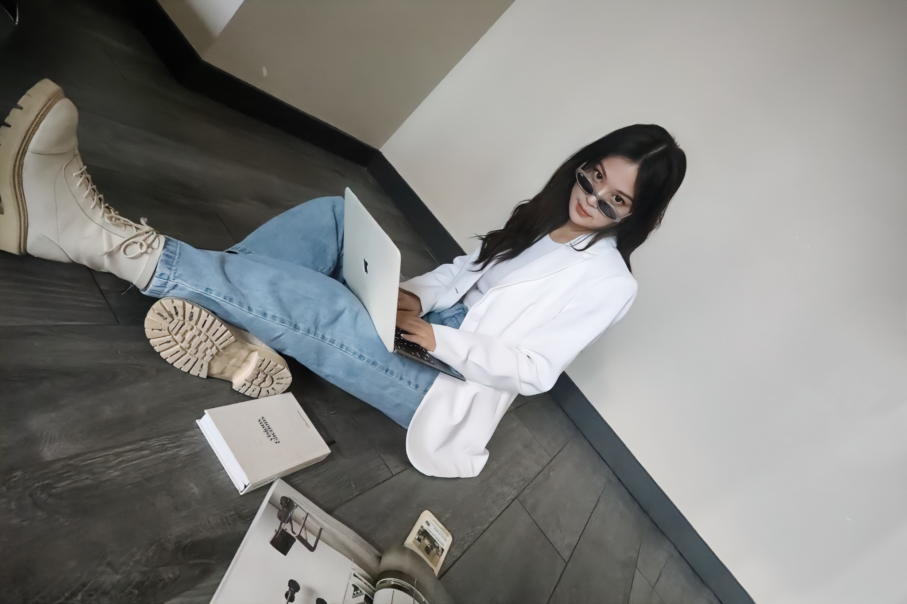

About Me
I'm a product and UX/UI designer with a degree in Art History and a minor in Management from McGill University (GPA: 3.82). My work combines creativity with strategy to create user-centric designs. I’m constantly learning and growing to provide impactful solutions to complex challenges.
- Certifications: Google UX Design Certificate, UX/UI Design Specialization (CalArts, 2022)
- Hobbies: Exploring design trends, storytelling through visuals, and collaborating on creative projects.
